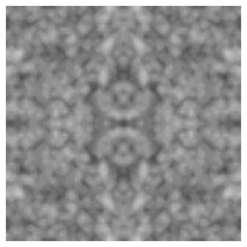
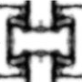
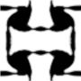
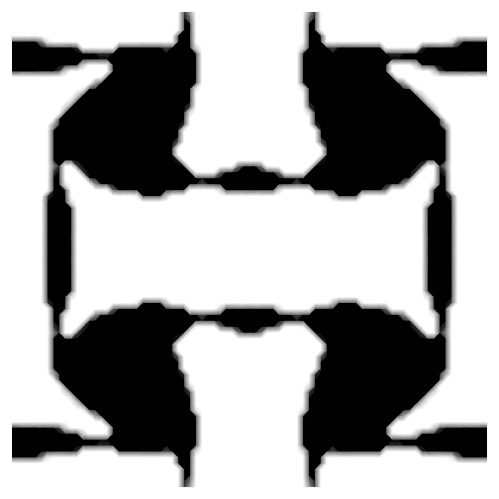
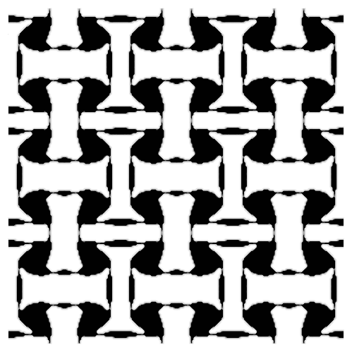

<meta charset="utf-8">
<meta name="viewport" content="width=device-width, initial-scale=1, viewport-fit=cover">
<title>Steel / Light Art Board</title>
<meta name="claude:viewport-fit-sides" content="cover">
<link rel="stylesheet" href="https://fonts.googleapis.com/css2?family=Archivo:wdth,wght@62..125,100..900&family=Newsreader:opsz,wght@6..72,400;6..72,500&family=IBM+Plex+Mono:wght@400&display=swap">
<script type="importmap">{"imports":{"three":"https://cdn.jsdelivr.net/npm/three@0.176.0/build/three.module.js","three/addons/":"https://cdn.jsdelivr.net/npm/three@0.176.0/examples/jsm/"}}</script>
<style>
/* Layout: a review board in one column of plates. Board chrome follows the viewer's theme;
   every specimen inside a .plate shows the site itself, so it carries the site's fixed light (or bay) palette. */
:root {
  --bg: #EEF1F0; --surface: #F8F9F8; --ink: #172027; --ink-2: #4F5D68; --rule: #CBD2D5; --cut: #F05A24;
  --sans: "Archivo", "Helvetica Neue", Arial, sans-serif;
}
@media (prefers-color-scheme: dark) { :root:not([data-theme="light"]) { --bg: #12191D; --surface: #182126; --ink: #E7ECEE; --ink-2: #A9B6BD; --rule: #33424A; --cut: #FF6A33; color-scheme: dark } }
:root[data-theme="dark"] { --bg: #12191D; --surface: #182126; --ink: #E7ECEE; --ink-2: #A9B6BD; --rule: #33424A; --cut: #FF6A33; color-scheme: dark }
* { box-sizing: border-box; }
body { margin: 0; background: var(--bg); color: var(--ink); font-family: var(--sans); font-size: 16px; line-height: 1.55;
  padding-left: max(16px, env(safe-area-inset-left, 0px)); padding-right: max(16px, env(safe-area-inset-right, 0px)); padding-block: 40px 96px; }
main { max-width: 1240px; margin: 0 auto; display: grid; gap: 80px; }
h1 { font-size: clamp(2rem, 5vw, 3.4rem); line-height: 1.02; font-weight: 600; font-variation-settings: "wdth" 118; letter-spacing: -0.025em; margin: 0; text-wrap: balance; }
h2 { font-size: clamp(1.5rem, 3vw, 2.1rem); line-height: 1.1; font-weight: 580; font-variation-settings: "wdth" 112; letter-spacing: -0.02em; margin: 0; text-wrap: balance; }
h3 { font-size: 1rem; font-weight: 620; margin: 0; }
p { margin: 0; max-width: 70ch; }
.muted { color: var(--ink-2); }
.small { font-size: 0.875rem; }
section.board { display: grid; gap: 24px; border-top: 1px solid var(--rule); padding-top: 28px; }
.head { display: grid; grid-template-columns: minmax(0, 1fr) minmax(0, 1.3fr); gap: 12px 40px; align-items: end; }
@media (max-width: 760px) { .head { grid-template-columns: 1fr; } }
.grid2 { display: grid; grid-template-columns: repeat(auto-fit, minmax(min(100%, 340px), 1fr)); gap: 20px; }
.grid3 { display: grid; grid-template-columns: repeat(auto-fit, minmax(min(100%, 260px), 1fr)); gap: 20px; }
figure { margin: 0; display: grid; gap: 8px; min-width: 0; align-content: start; }
figcaption { font-size: 0.82rem; color: var(--ink-2); font-variation-settings: "wdth" 90; }
figcaption b { color: var(--ink); font-weight: 600; }
.why { font-size: 0.9rem; color: var(--ink-2); border-left: 2px solid var(--cut); padding-left: 12px; max-width: 70ch; }
img.r { display: block; width: 100%; height: auto; background: #1a2227; border-radius: 4px; }
.rules { display: grid; gap: 6px; padding-left: 1.1em; margin: 0; color: var(--ink-2); font-size: 0.92rem; }
.rules li::marker { color: var(--cut); }
.overflow { overflow-x: auto; }

/* The site's own palette, fixed: specimens render the light site regardless of the board theme. */
.plate { --p: #F6F7F5; --i: #172027; --i2: #4F5D68; --mist: #D5DCDF; --steel: #26353D; --bay: #121A1F; --c: #F05A24;
  background: var(--p); color: var(--i); border-radius: 6px; outline: 1px solid var(--rule); padding: clamp(16px, 3vw, 32px); min-width: 0; color-scheme: light; }
.plate.dark { background: var(--bay); color: #E9EEF0; }

/* Colour */
.swatches { display: grid; grid-template-columns: repeat(auto-fit, minmax(min(100%, 150px), 1fr)); gap: 14px; }
.sw { display: grid; gap: 6px; align-content: start; font-size: 0.82rem; }
.chip { height: 84px; border-radius: 4px; outline: 1px solid rgba(23,32,39,0.12); display: flex; align-items: end; padding: 8px; font-size: 0.78rem; }
.sw b { font-weight: 620; font-size: 0.92rem; }
.sw span { color: var(--i2); }
.chip.core { background: radial-gradient(circle at 50% 60%, #FFFFFF 0 5%, #FFD7B0 10%, #F05A24 26%, #26353D 48%); color: #E9EEF0; }
table.contrast { border-collapse: collapse; font-size: 0.85rem; min-width: 520px; }
table.contrast td, table.contrast th { text-align: left; padding: 6px 14px 6px 0; border-bottom: 1px solid var(--mist); font-weight: 400; }
table.contrast th { color: var(--i2); font-weight: 560; }
.pair { display: inline-block; width: 46px; padding: 2px 0; text-align: center; border-radius: 3px; font-weight: 600; }

/* Type */
.spec { display: grid; gap: 22px; }
.spec .row { display: grid; grid-template-columns: 160px minmax(0, 1fr); gap: 8px 24px; align-items: baseline; border-bottom: 1px solid var(--mist); padding-bottom: 18px; }
@media (max-width: 640px) { .spec .row { grid-template-columns: 1fr; } }
.spec .meta { font-size: 0.78rem; color: var(--i2); font-variation-settings: "wdth" 88; }
.t-display { font-size: clamp(2.2rem, 5.2vw, 4.6rem); line-height: 1.0; font-weight: 560; font-variation-settings: "wdth" 118; letter-spacing: -0.025em; text-wrap: balance; }
.t-h2 { font-size: clamp(1.7rem, 3.2vw, 2.6rem); line-height: 1.05; font-weight: 570; font-variation-settings: "wdth" 116; letter-spacing: -0.02em; text-wrap: balance; }
.t-h3 { font-size: 1.3rem; line-height: 1.25; font-weight: 600; font-variation-settings: "wdth" 104; }
.t-body { font-size: 1.0625rem; line-height: 1.65; max-width: 62ch; }
.t-small { font-size: 0.875rem; line-height: 1.5; color: var(--i2); }
.t-data { font-size: 0.875rem; font-variation-settings: "wdth" 82; font-variant-numeric: tabular-nums; color: var(--i2); }
.t-cap { font-size: 0.78rem; font-variation-settings: "wdth" 85; color: var(--i2); }
.faces { display: grid; grid-template-columns: repeat(auto-fit, minmax(min(100%, 300px), 1fr)); gap: 16px; }
.face { border-top: 2px solid var(--i); padding-top: 14px; display: grid; gap: 10px; align-content: start; }
.face .hl { font-size: 1.7rem; line-height: 1.08; letter-spacing: -0.015em; }
.face .lbl { font-size: 0.8rem; color: var(--i2); }
.verdict { font-size: 0.85rem; color: var(--i2); }
.verdict b { color: var(--i); }

/* Grid */
.cols { display: grid; grid-template-columns: repeat(12, minmax(0, 1fr)); gap: 6px; height: 120px; }
.cols i { background: rgba(240,90,36,0.08); outline: 1px solid rgba(240,90,36,0.25); }
.cols.m { grid-template-columns: repeat(4, minmax(0, 1fr)); max-width: 240px; }
.space { display: flex; flex-wrap: wrap; align-items: end; gap: 14px; }
.space div { display: grid; gap: 4px; justify-items: start; font-size: 0.75rem; color: var(--i2); font-variant-numeric: tabular-nums; }
.space s { display: block; height: 14px; background: var(--steel); text-decoration: none; }

/* Linework + density */
.lw { display: grid; gap: 14px; }
.lw svg { width: 100%; height: auto; display: block; }
.states { display: grid; grid-template-columns: repeat(auto-fit, minmax(min(100%, 130px), 1fr)); gap: 14px; }
.state { display: grid; gap: 6px; }
.state img { width: 100%; aspect-ratio: 1; object-fit: contain; background: #fff; outline: 1px solid var(--mist); display: block; image-rendering: auto; }
.state .k { font-size: 0.85rem; font-weight: 600; font-variant-numeric: tabular-nums; }
.state.tr img { filter: grayscale(1) contrast(0.55) opacity(0.75); outline: 1px dashed var(--i2); }
.state.tr .k { font-weight: 400; color: var(--i2); font-style: italic; }
.prov { font-size: 0.78rem; color: var(--i2); font-variation-settings: "wdth" 85; }

/* Captions specimen */
.caps { display: grid; gap: 14px; }
.cap-row { display: grid; grid-template-columns: 200px minmax(0, 1fr); gap: 6px 20px; align-items: baseline; }
@media (max-width: 640px) { .cap-row { grid-template-columns: 1fr; } }
.cap-row .use { font-size: 0.8rem; color: var(--i2); }
.c-ill { font-size: 0.78rem; color: var(--i2); font-variation-settings: "wdth" 85; }
.c-src { font-size: 0.78rem; color: var(--i2); font-variation-settings: "wdth" 85; border-top: 1px solid var(--mist); padding-top: 4px; }
.c-concept { font-size: 0.78rem; color: var(--i2); font-variation-settings: "wdth" 85; padding-left: 10px; border-left: 2px dashed var(--i2); }
.c-trans { font-size: 0.78rem; color: var(--i2); font-style: italic; font-variation-settings: "wdth" 85; }

/* Light publications beside the dark bay */
.pair-grid { display: grid; grid-template-columns: minmax(0, 1.1fr) minmax(0, 1fr); gap: 0; border-radius: 6px; overflow: hidden; outline: 1px solid var(--rule); }
@media (max-width: 860px) { .pair-grid { grid-template-columns: 1fr; } }
.pair-grid .plate { border-radius: 0; outline: 0; }
.pubs { display: grid; gap: 0; }
.pub { display: grid; grid-template-columns: 116px minmax(0, 1fr); gap: 4px 18px; padding: 16px 0; border-top: 1px solid var(--mist); }
@media (max-width: 520px) { .pub { grid-template-columns: 1fr; } }
.pub .d { font-size: 0.85rem; font-variation-settings: "wdth" 82; color: var(--i2); font-variant-numeric: tabular-nums; }
.pub h4 { margin: 0; font-size: 1.05rem; line-height: 1.3; font-weight: 580; font-variation-settings: "wdth" 102; }
.pub p { font-size: 0.875rem; color: var(--i2); }
.pub .me { font-weight: 640; color: var(--i); }
.pub a { color: var(--i); text-underline-offset: 3px; }
.bay-head { font-size: clamp(1.5rem, 3vw, 2.2rem); line-height: 1.05; font-weight: 560; font-variation-settings: "wdth" 114; letter-spacing: -0.015em; margin: 0 0 8px; }

/* Motion */
.motion { display: grid; grid-template-columns: repeat(auto-fit, minmax(min(100%, 280px), 1fr)); gap: 16px; }
.mcard { background: #fff; outline: 1px solid var(--mist); border-radius: 4px; padding: 16px; display: grid; gap: 10px; align-content: start; color: var(--i); }
.mcard h3 { font-size: 1.05rem; }
.mcard .band { font-size: 0.8rem; color: var(--i2); font-variant-numeric: tabular-nums; }
.mcard svg { width: 100%; height: auto; display: block; }
.mcard button { justify-self: start; font: inherit; font-size: 0.85rem; background: transparent; color: var(--i); border: 1px solid var(--i); border-radius: 3px; padding: 6px 12px; cursor: pointer; min-height: 36px; }
.mcard button:hover { background: var(--i); color: var(--p); }
:focus-visible { outline: 2px solid var(--cut); outline-offset: 3px; }
.stage-demo { position: relative; height: 70px; border-bottom: 1px solid var(--mist); overflow: hidden; }
.dot { position: absolute; left: 0; bottom: 10px; width: 10px; height: 10px; border-radius: 50%; background: var(--c); }
.trail { position: absolute; left: 0; bottom: 14px; height: 2px; width: 0; background: var(--i); }
.run .dot { animation: feed 1600ms linear forwards; }
.run .trail { animation: trail 1600ms linear forwards; }
@keyframes feed { to { left: calc(100% - 10px); } }
@keyframes trail { to { width: calc(100% - 10px); } }
.seq { display: grid; grid-template-columns: repeat(4, minmax(0, 1fr)); gap: 6px; }
.seq img { width: 100%; aspect-ratio: 1; object-fit: contain; background: #fff; outline: 1px solid var(--mist); opacity: 0.25; display: block; }
.seq.run img { animation: step 2400ms steps(1, end) forwards; }
.seq.run img:nth-child(1) { animation-delay: 0ms; } .seq.run img:nth-child(2) { animation-delay: 600ms; }
.seq.run img:nth-child(3) { animation-delay: 1200ms; } .seq.run img:nth-child(4) { animation-delay: 1800ms; }
@keyframes step { to { opacity: 1; } }
.xf { position: relative; aspect-ratio: 2 / 1; display: grid; grid-template-columns: 1fr 1fr; gap: 6px; }
.xf .pane { position: relative; }
.xf img { position: absolute; inset: 0; width: 100%; height: 100%; object-fit: contain; background: #fff; outline: 1px solid var(--mist); }
.xf .b { opacity: 0; }
.xf.run .b { animation: xfade 1200ms cubic-bezier(.45,0,.55,1) forwards; }
.xf.run .tag { animation: xtag 1200ms forwards; }
.xf .tag { position: absolute; left: 6px; bottom: 6px; font-size: 0.72rem; color: var(--i2); font-style: italic; opacity: 0; }
@keyframes xfade { 0% { opacity: 0; filter: grayscale(1) contrast(.6); } 70% { opacity: .8; filter: grayscale(1) contrast(.6); } 100% { opacity: 1; filter: none; } }
@keyframes xtag { 10%, 80% { opacity: 1; } 100% { opacity: 0; } }
.cam { height: 90px; border: 1px solid var(--mist); position: relative; overflow: hidden; background: #fff; }
.cam svg { position: absolute; inset: 0; width: 100%; height: 100%; }
.cam .frame { transform-origin: 50% 50%; transform-box: fill-box; }
.cam.run .frame { animation: dolly 1100ms cubic-bezier(.65,0,.35,1) forwards; }
@keyframes dolly { to { transform: scale(0.32) translate(40%, 30%); } }
.ed { height: 70px; display: grid; align-content: center; overflow: hidden; }
.ed span { display: block; font-size: 1.6rem; font-weight: 560; font-variation-settings: "wdth" 116; letter-spacing: -0.015em; clip-path: inset(0 0 0 0); }
.ed.run span { animation: mask 520ms cubic-bezier(.2,.7,.2,1) both; }
.ed.run span + span { animation-delay: 80ms; }
@keyframes mask { from { clip-path: inset(0 0 100% 0); transform: translateY(20%); } to { clip-path: inset(0 0 0 0); transform: none; } }
@media (prefers-reduced-motion: reduce) {
  .run .dot, .run .trail, .seq.run img, .xf.run .b, .xf.run .tag, .cam.run .frame, .ed.run span { animation-duration: 1ms !important; animation-delay: 0ms !important; }
}

/* Signatures */
.sig { display: grid; gap: 14px; }
.strip { display: grid; grid-template-columns: repeat(3, minmax(0, 1fr)); gap: 10px; }
@media (max-width: 640px) { .strip { grid-template-columns: 1fr; } }
.strip img { width: 100%; display: block; border-radius: 3px; background: #1a2227; aspect-ratio: 3 / 2; object-fit: cover; }
.flowsvg { width: 100%; height: auto; display: block; }
.tile { display: grid; grid-template-columns: auto auto; gap: 18px; align-items: center; justify-content: start; }
.tile img { width: min(160px, 38vw); aspect-ratio: 1; object-fit: contain; background: #fff; outline: 1px solid var(--mist); }
.tile .three { width: min(240px, 50vw); }
svg text { font-family: var(--sans); }
</style>

<main>
<header class="intro" style="display:grid;gap:16px">
  <p class="muted small">Design stage D2: art board for the chosen direction</p>
  <h1>Steel / Light, with a laser bay</h1>
  <p class="muted">The site is light porcelain with ink linework and one machined steel object. A single graphite bay holds the laser chapter. The science and AI chapters use atlas plates: drawings, recorded states and labelled data. This board fixes colour, type, grid, materials, captions and the four motion families, so D3 and production can work from it.</p>
  <ul class="rules">
    <li>Every render is captioned "Illustrative render". Recorded research states carry their iteration label and a source line.</li>
    <li>No process values, scores or outcomes appear anywhere on the site.</li>
    <li>Gate: Murat approves this board and the D3 storyboard before any production work.</li>
  </ul>
</header>

<!-- COLOUR -->
<section class="board" aria-labelledby="c-h">
  <div class="head"><h2 id="c-h">Colour</h2><p class="muted">Six inks and one light. Orange only ever marks the active cut, the toolpath or keyboard focus: one meaning, so it keeps its pull.</p></div>
  <div class="plate">
    <div class="swatches">
      <div class="sw"><div class="chip" style="background:#F6F7F5">Aa</div><b>Porcelain</b><span>#F6F7F5; page</span><span>A cool, barely green white; reads as primed steel sheet, not paper.</span></div>
      <div class="sw"><div class="chip" style="background:#172027;color:#F6F7F5">Aa</div><b>Ink</b><span>#172027; text, object edges</span><span>Blue-black from steel shadow, so text and linework share one ink.</span></div>
      <div class="sw"><div class="chip" style="background:#4F5D68;color:#F6F7F5">Aa</div><b>Ink 2</b><span>#4F5D68; secondary text, captions</span><span>The quietest text colour that still passes AA on porcelain.</span></div>
      <div class="sw"><div class="chip" style="background:#D5DCDF">Aa</div><b>Mist</b><span>#D5DCDF; rules, construction lines</span><span>Structure that recedes; never used for text.</span></div>
      <div class="sw"><div class="chip" style="background:#26353D;color:#E9EEF0">Aa</div><b>Deep steel</b><span>#26353D; steel body, dark UI</span><span>The object's own colour, so the hero part and the UI agree.</span></div>
      <div class="sw"><div class="chip" style="background:#121A1F;color:#E9EEF0">Aa</div><b>Bay</b><span>#121A1F; laser chapter only</span><span>The one dark room; dim enough that the cut front is the brightest thing on screen.</span></div>
      <div class="sw"><div class="chip" style="background:#F05A24;color:#172027">Aa</div><b>Cut</b><span>#F05A24; active cut, toolpath, focus</span><span>Graphics and focus only: 3.2:1 on porcelain is too low for text.</span></div>
      <div class="sw"><div class="chip core"></div><b>Molten core</b><span>#FFFFFF → #FFD7B0</span><span>Near-white at the cut front, a few pixels wide and only while cutting.</span></div>
    </div>
  </div>
  <div class="overflow">
    <table class="contrast plate" style="padding:16px 20px">
      <tr><th>Pair</th><th>Ratio</th><th>Use</th></tr>
      <tr><td><span class="pair" style="background:#F6F7F5;color:#172027;outline:1px solid #D5DCDF">Aa</span> ink on porcelain</td><td>15.4:1</td><td>All body text and headings</td></tr>
      <tr><td><span class="pair" style="background:#F6F7F5;color:#4F5D68;outline:1px solid #D5DCDF">Aa</span> ink 2 on porcelain</td><td>6.3:1</td><td>Captions, dates, detail lines</td></tr>
      <tr><td><span class="pair" style="background:#121A1F;color:#E9EEF0">Aa</span> bay ink on bay</td><td>15.1:1</td><td>Laser chapter headings</td></tr>
      <tr><td><span class="pair" style="background:#121A1F;color:#A9B6BD">Aa</span> bay ink 2 on bay</td><td>8.5:1</td><td>Laser chapter body and captions</td></tr>
      <tr><td><span class="pair" style="background:#F6F7F5;color:#F05A24;outline:1px solid #D5DCDF">Aa</span> cut on porcelain</td><td>3.2:1</td><td>Non-text graphics only (meets 3:1)</td></tr>
      <tr><td><span class="pair" style="background:#121A1F;color:#F05A24">Aa</span> cut on bay</td><td>5.2:1</td><td>Progress line, toolpath in the bay</td></tr>
    </table>
  </div>
</section>

<!-- TYPE -->
<section class="board" aria-labelledby="t-h">
  <div class="head"><h2 id="t-h">Type: Archivo only</h2><p class="muted">One variable family. Contrast comes from the width axis: wide and tight for display, normal for reading, narrow for dates and captions.</p></div>
  <div class="plate spec">
    <div class="row"><div class="meta">Display<br>clamp 35–74 px; 560; wdth 118; −2.5%</div><div class="t-display">I develop AI and optimization methods for structural engineering and steel construction.</div></div>
    <div class="row"><div class="meta">Chapter<br>clamp 27–42 px; 570; wdth 116</div><div class="t-h2">From geometry to a cut part</div></div>
    <div class="row"><div class="meta">Item title<br>21 px; 600; wdth 104</div><div class="t-h3">Topology Optimization of Nonlinear Elastic Micro-structures by a Domain Reduction Technique</div></div>
    <div class="row"><div class="meta">Body<br>17 px / 1.65; 400; wdth 100; ≤ 62ch</div><div class="t-body">PhD candidate at Politecnico di Milano. My current work is decision support for choosing how steel parts are cut, built on BIM models.</div></div>
    <div class="row"><div class="meta">Small<br>14 px / 1.5; ink 2</div><div class="t-small">M. Güven, İ. Özdemir. Finite Elements in Analysis and Design 260, 104599.</div></div>
    <div class="row"><div class="meta">Data<br>14 px; wdth 82; tabular</div><div class="t-data">2026 &nbsp; 2025-11-26 &nbsp; 2024–25 &nbsp; doi:10.1016/j.finel.2026.104599</div></div>
    <div class="row"><div class="meta">Caption<br>12.5 px; wdth 85; ink 2</div><div class="t-cap">Illustrative render. No process parameters shown.</div></div>
  </div>
  <div class="plate">
    <h3 style="margin-bottom:6px">Does a second face earn its place?</h3>
    <p class="t-small" style="margin-bottom:18px">The same chapter heading and caption, set three ways.</p>
    <div class="faces">
      <div class="face"><div class="hl" style="font-weight:570;font-variation-settings:'wdth' 116">Material can be designed</div><div class="lbl" style="font-variation-settings:'wdth' 85">Recorded state, iteration 50.</div><div class="verdict"><b>Archivo alone.</b> Wide display and narrow caption read as one voice with clear rank. Chosen.</div></div>
      <div class="face"><div class="hl" style="font-family:Newsreader,Georgia,serif;font-weight:500">Material can be designed</div><div class="lbl" style="font-family:Newsreader,Georgia,serif">Recorded state, iteration 50.</div><div class="verdict"><b>+ Newsreader.</b> Warmer and more literary; pulls the site toward a humanities journal and away from drawings.</div></div>
      <div class="face"><div class="hl" style="font-weight:570;font-variation-settings:'wdth' 116">Material can be designed</div><div class="lbl" style="font-family:'IBM Plex Mono',monospace;font-size:0.74rem">RECORDED STATE / ITER 050</div><div class="verdict"><b>+ Plex Mono labels.</b> The coded-label look the brief bans; it also implies data the label doesn't carry.</div></div>
    </div>
  </div>
  <p class="why">Rule: sentence case everywhere, no uppercase eyebrows, no numbered headings unless the content is a real sequence. Dates and DOIs use the narrow tabular style rather than a mono face.</p>
</section>

<!-- GRID -->
<section class="board" aria-labelledby="g-h">
  <div class="head"><h2 id="g-h">Grid and spacing</h2><p class="muted">12 columns from 1024 px up, 8 on tablet, 4 on phones. Text sits in columns 1–7; objects and plates take 6–12 and may bleed right.</p></div>
  <div class="grid2">
    <div class="plate" style="display:grid;gap:12px">
      <div class="cols" aria-hidden="true"><i></i><i></i><i></i><i></i><i></i><i></i><i></i><i></i><i></i><i></i><i></i><i></i></div>
      <p class="t-small">Desktop ≥ 1024: max width 1320, outer margin max(24 px, 5vw), gutter 24. Hero: statement 7 cols, object 5 cols plus bleed.</p>
      <div class="cols m" aria-hidden="true"><i></i><i></i><i></i><i></i></div>
      <p class="t-small">Phone ≤ 639: 4 cols, margin 20, gutter 16. Name and statement always come before the visual.</p>
    </div>
    <div class="plate" style="display:grid;gap:14px;align-content:start">
      <div class="space" aria-label="Spacing scale">
        <div><s style="width:4px"></s>4</div><div><s style="width:8px"></s>8</div><div><s style="width:12px"></s>12</div><div><s style="width:16px"></s>16</div><div><s style="width:24px"></s>24</div><div><s style="width:32px"></s>32</div><div><s style="width:48px"></s>48</div><div><s style="width:72px"></s>72</div><div><s style="width:120px"></s>120</div>
      </div>
      <p class="t-small">Spacing in px. 4–16 inside components, 24–48 between items, 72 between groups, 120 between chapters (72 on phones). Corners: 0 on plates and images, 3 px on controls. No card shadows.</p>
    </div>
  </div>
</section>

<!-- MATERIAL + LINEWORK -->
<section class="board" aria-labelledby="m-h">
  <div class="head"><h2 id="m-h">Material and linework</h2><p class="muted">One steel, three representations: drawing, material, process. The representation changes; the geometry never does.</p></div>
  <div class="grid3">
    <figure><figcaption><b>Drawing.</b> Ink edges on white, 1 px. Illustrative render.</figcaption></figure>
    <figure><figcaption><b>Material.</b> Brushed steel, roughness 0.42, soft studio light; drawing edges stay on the cut side. Illustrative render.</figcaption></figure>
    <figure><figcaption><b>Process.</b> Bay light, one localized cut front, narrow kerf. Illustrative render.</figcaption></figure>
  </div>
  <div class="plate lw">
    <svg viewBox="0 0 900 150" role="img" aria-label="Linework weights: object edge, construction line, planned contour, active toolpath, cut kerf">
      <g font-size="13" fill="#4F5D68">
        <line x1="20" y1="30" x2="300" y2="30" stroke="#172027" stroke-width="1"/><text x="320" y="34">Object edge; ink 1 px</text>
        <line x1="20" y1="60" x2="300" y2="60" stroke="#B4BFC4" stroke-width="0.75"/><text x="320" y="64">Construction line; mist 0.75 px</text>
        <line x1="20" y1="90" x2="300" y2="90" stroke="#172027" stroke-width="1" stroke-dasharray="6 4"/><text x="320" y="94">Planned contour; ink 1 px, dash 6/4</text>
        <line x1="20" y1="120" x2="300" y2="120" stroke="#F05A24" stroke-width="1.75"/><text x="320" y="124">Active toolpath; cut 1.75 px</text>
        <line x1="600" y1="30" x2="600" y2="130" stroke="#D5DCDF"/><text x="620" y="34">Hairlines stay at true pixel width</text><text x="620" y="54">at every zoom (non-scaling stroke).</text><text x="620" y="94">Only one orange line on screen</text><text x="620" y="114">at a time.</text>
      </g>
    </svg>
  </div>
</section>

<!-- DENSITY -->
<section class="board" aria-labelledby="d-h">
  <div class="head"><h2 id="d-h">Density fields: recorded vs transition</h2><p class="muted">Recorded optimization states keep their original look: solid black on white, framed in mist, labelled with the iteration. Anything generated between them is styled as a transition and never carries an iteration number.</p></div>
  <div class="plate" style="display:grid;gap:16px">
    <div class="states">
      <div class="state"><span class="k">Initial</span></div>
      <div class="state"><span class="k">Iteration 10</span></div>
      <div class="state tr"><span class="k">Transition, not a computed state</span></div>
      <div class="state"><span class="k">Iteration 50</span></div>
      <div class="state"><span class="k">Final, iteration 250</span></div>
    </div>
    <p class="prov">Source: MSc thesis, İzmir Institute of Technology, 2023. The third panel shows the transition style only; on the site it is a crossfade frame, never a stored image.</p>
  </div>
  <p class="why">Recorded states are resampled for size only: no smoothing, recolouring or vectorizing, so nothing is drawn that the optimizer did not produce.</p>
</section>

<!-- CAPTIONS -->
<section class="board" aria-labelledby="cap-h">
  <div class="head"><h2 id="cap-h">Captions and provenance</h2><p class="muted">Four caption types, each with a fixed wording and a distinct mark, so a reader can tell a render, a recorded result and a concept apart at a glance.</p></div>
  <div class="plate caps">
    <div class="cap-row"><span class="use">Any render or modelled scene</span><span class="c-ill">Illustrative render. No process parameters shown.</span></div>
    <div class="cap-row"><span class="use">Recorded research data</span><span class="c-src">Source: MSc thesis, İzmir Institute of Technology, 2023</span></div>
    <div class="cap-row"><span class="use">Diagram of an idea, not data</span><span class="c-concept">Conceptual information flow. No process scores or outcomes are implied.</span></div>
    <div class="cap-row"><span class="use">Generated in-between frame</span><span class="c-trans">Transition, not a computed state</span></div>
    <div class="cap-row"><span class="use">Arrangement for display</span><span class="c-ill">Visual periodic arrangement, not a validated structural response.</span></div>
  </div>
  <p class="why">Never "Fig. X" or "thesis figure" pointers. Team projects say "team project" in the detail line until each team agrees to the images used.</p>
</section>

<!-- LIGHT VS DARK -->
<section class="board" aria-labelledby="ld-h">
  <div class="head"><h2 id="ld-h">The light site beside the dark bay</h2><p class="muted">Publications are the calmest part of the site; the bay is the loudest. They share type, grid and ink, so moving between them feels like changing rooms, not websites.</p></div>
  <div class="pair-grid">
    <div class="plate">
      <h3 class="t-h2" style="margin:0 0 18px">Publications</h3>
      <div class="pubs">
        <div class="pub"><span class="d">Forthcoming</span><div><h4>Metals Driving Sustainable Construction</h4><p>A. Kanyilmaz, <span class="me">M. Güven</span>. Book, Wiley. Listed for 2027. ISBN 9781394351657</p></div></div>
        <div class="pub"><span class="d">2026</span><div><h4><a href="https://doi.org/10.1016/j.finel.2026.104599">Topology Optimization of Nonlinear Elastic Micro-structures by a Domain Reduction Technique</a></h4><p><span class="me">M. Güven</span>, İ. Özdemir. Finite Elements in Analysis and Design 260, 104599</p></div></div>
        <div class="pub"><span class="d">2025</span><div><h4>Laser Cutting of Key Metals in the Construction Industry</h4><p>A. Kanyilmaz, <span class="me">M. Güven</span>, B. Previtali. Extended abstract, ESTAD 2025, Verona</p></div></div>
        <div class="pub"><span class="d">2023</span><div><h4>Topology Optimization of Nonlinear Elastic Microstructures</h4><p><span class="me">M. Güven</span>. MSc thesis, İzmir Institute of Technology</p></div></div>
      </div>
    </div>
    <div class="plate dark" style="display:grid;gap:14px;align-content:start">
      
      <div><p class="bay-head">Kerf</p><p style="color:#A9B6BD;font-size:0.95rem">Material is removed only along a narrow kerf.</p></div>
      <p style="color:#A9B6BD;font-size:0.78rem;font-variation-settings:'wdth' 85">Illustrative render. No process parameters shown.</p>
    </div>
  </div>
</section>

<!-- MOTION -->
<section class="board" aria-labelledby="mo-h">
  <div class="head"><h2 id="mo-h">Four motion families</h2><p class="muted">Each family has one job and one timing band. Scroll-scrubbed motion stops when scrolling stops; nothing loops in the background. Press a demo to play it.</p></div>
  <div class="plate motion">
    <div class="mcard">
      <h3>Machined</h3><p class="band">Linear, constant feed; tied to scroll, no easing</p>
      <p class="t-small">Toolpaths, the cutting head, path progress. Linear because a machine at constant feed is linear; easing here would read as a cartoon.</p>
      <div class="stage-demo" id="d-mach"><i class="trail"></i><i class="dot"></i></div>
      <button type="button" data-demo="d-mach">Play machined</button>
    </div>
    <div class="mcard">
      <h3>Computational: scientific sequence</h3><p class="band">Hard cuts between recorded states; 600 ms hold each</p>
      <p class="t-small">Only recorded states, in their real order, each labelled. No frames in between.</p>
      <div class="seq" id="d-seq"></div>
      <p class="t-cap">Initial, 10, 50, final (250). Source: MSc thesis, İzmir Institute of Technology, 2023</p>
      <button type="button" data-demo="d-seq">Play sequence</button>
    </div>
    <div class="mcard">
      <h3>Computational: visual transition</h3><p class="band">Crossfade 800–1200 ms; ease in-out</p>
      <p class="t-small">Presentation only. While it runs, the image is desaturated and labelled as a transition; colour returns only on the recorded end state.</p>
      <div class="xf" id="d-xf"><div class="pane"></div><div class="pane"><span class="tag">Transition, not a computed state</span></div></div>
      <button type="button" data-demo="d-xf">Play transition</button>
    </div>
    <div class="mcard">
      <h3>Camera</h3><p class="band">Dolly and track; 900–1400 ms or scroll-linked; ease in-out</p>
      <p class="t-small">Macro-to-wide and wide-to-macro only, always toward what the text is about. No orbits during scroll.</p>
      <div class="cam" id="d-cam"><svg viewBox="0 0 300 90" preserveAspectRatio="xMidYMid slice" aria-hidden="true"><rect width="300" height="90" fill="#fff"/><rect x="20" y="30" width="260" height="30" fill="none" stroke="#172027"/><rect x="120" y="38" width="60" height="14" rx="7" fill="none" stroke="#172027" stroke-dasharray="4 3"/><rect class="frame" x="10" y="8" width="280" height="74" fill="none" stroke="#F05A24" stroke-width="1.5"/></svg></div>
      <button type="button" data-demo="d-cam">Play camera</button>
    </div>
    <div class="mcard">
      <h3>Editorial</h3><p class="band">Masks and fades 120–650 ms; headings 350–650, controls 120–280</p>
      <p class="t-small">Text, menus, publication previews. Text is never hidden at first paint; masks run only on reveal after load.</p>
      <div class="ed" id="d-ed"><span>Material can</span><span>be designed</span></div>
      <button type="button" data-demo="d-ed">Play editorial</button>
    </div>
  </div>
  <p class="why">Rhythm: one loud family at a time. The bay is machined plus camera; the MSc chapter is computational; everything else is editorial. Under reduced motion every family jumps to its end state.</p>
</section>

<!-- SIGNATURES -->
<section class="board" aria-labelledby="s-h">
  <div class="head"><h2 id="s-h">Three signature families</h2><p class="muted">The only three authored moments. Everything else is subordinate.</p></div>

  <div class="plate sig">
    <h3>1. Drawing → steel → cut</h3>
    <p class="t-small">Hero to laser chapter. The same beam goes from linework to material to the bay, where the cut begins on the opening the drawing showed.</p>
    <div class="strip">
      
      
      
    </div>
    <p class="t-cap">Illustrative render.</p>
  </div>

  <div class="plate sig">
    <h3>2. Cut part → decision factors</h3>
    <p class="t-small">End of the laser chapter. The finished contour breaks into features of the part, which feed two candidate processes, which feed the three factors in the PhD scope. Both processes are drawn alike: neither is the answer.</p>
    <div class="overflow"><svg class="flowsvg" viewBox="0 0 980 340" role="img" aria-label="Conceptual information flow from part features to candidate processes to cost, time and environmental impact" style="min-width:640px">
      <g font-size="15" fill="#4F5D68"><text x="40" y="40">Features from the model</text><text x="390" y="40">Candidate processes</text><text x="720" y="40">Decision factors</text></g>
      <g fill="none" stroke="#9FB0B8" stroke-width="1.2">
        <path d="M260 110 C330 110 330 120 390 120"/><path d="M260 110 C330 110 330 250 390 250"/><path d="M260 190 C330 190 330 120 390 120"/><path d="M260 190 C330 190 330 250 390 250"/><path d="M260 270 C330 270 330 120 390 120"/><path d="M260 270 C330 270 330 250 390 250"/>
        <path d="M600 120 C660 120 660 100 720 100"/><path d="M600 120 C660 120 660 190 720 190"/><path d="M600 120 C660 120 660 280 720 280"/><path d="M600 250 C660 250 660 100 720 100"/><path d="M600 250 C660 250 660 190 720 190"/><path d="M600 250 C660 250 660 280 720 280"/>
      </g>
      <g font-size="17" fill="#172027">
        <rect x="40" y="88" width="220" height="44" fill="#F6F7F5" stroke="#172027"/><text x="56" y="116">Opening geometry</text>
        <rect x="40" y="168" width="220" height="44" fill="#F6F7F5" stroke="#172027"/><text x="56" y="196">Holes and edges</text>
        <rect x="40" y="248" width="220" height="44" fill="#F6F7F5" stroke="#172027" stroke-dasharray="5 3"/><text x="56" y="276">Member data (BIM)</text>
        <rect x="390" y="98" width="210" height="44" fill="#F6F7F5" stroke="#172027"/><text x="406" y="126">Laser cutting</text>
        <rect x="390" y="228" width="210" height="44" fill="#F6F7F5" stroke="#172027"/><text x="406" y="256">Plasma cutting</text>
        <rect x="720" y="78" width="210" height="44" fill="#F6F7F5" stroke="#172027"/><text x="736" y="106">Cost</text>
        <rect x="720" y="168" width="210" height="44" fill="#F6F7F5" stroke="#172027"/><text x="736" y="196">Time</text>
        <rect x="720" y="258" width="210" height="44" fill="#F6F7F5" stroke="#172027"/><text x="736" y="286">Environmental impact</text>
      </g>
    </svg></div>
    <p class="c-concept">Conceptual information flow. No process scores or outcomes are implied.</p>
    <p class="t-small">Dashed box: "Member data (BIM)" is a draft label for Murat to confirm.</p>
  </div>

  <div class="plate sig">
    <h3>3. Recorded states → periodic arrangement</h3>
    <p class="t-small">MSc chapter. The recorded states play as a scientific sequence, then the final cell repeats into a 3×3 arrangement for display.</p>
    <div class="tile">
      
      
    </div>
    <p class="c-ill">Visual periodic arrangement, not a validated structural response.</p>
    <p class="prov">Source: MSc thesis, İzmir Institute of Technology, 2023</p>
  </div>
  <p class="why">Subordinate, not signature: the lattice-to-sensor-grid match cut into the AI chapter. It is labelled as a graphic link, not shared data.</p>
</section>
</main>

<script type="module">
import { renderAll } from "./lib/beam-scene.js";
import { frameAt } from "./lib/laser-sequence.js";
for (const img of document.querySelectorAll("img[data-bay]")) img.dataset.frame = JSON.stringify(frameAt(+img.dataset.bay, 900, 600));
renderAll();
for (const b of document.querySelectorAll("button[data-demo]")) b.addEventListener("click", () => {
  const el = document.getElementById(b.dataset.demo);
  el.classList.remove("run"); void el.offsetWidth; el.classList.add("run");
});
</script>
